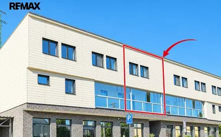

New to tracker — actual advert age unknown
Nové prodej domu 93 m² s pozemkem 21 m² Hrázka, Ostrava - Pustkovec 8 745 000 Kč
Nové prodej domu 93 m² s pozemkem 21 m² Hrázka, Ostrava - Pustkovec 8 745 000 Kč
Not stated → 8,745,000 CZK
Original advert ↗